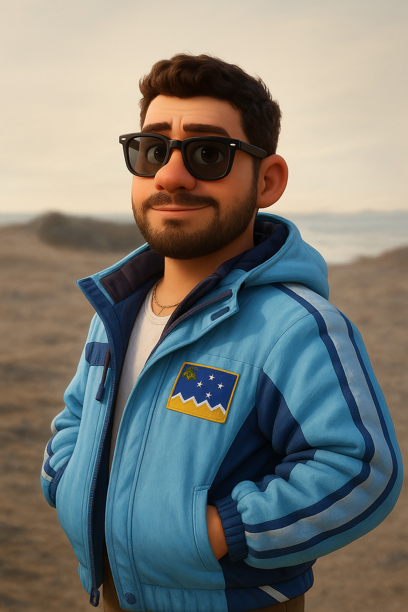

Del Caribe a lo Austral · Punta Arenas, Chile
Soy José Manuel Simons — abogado migratorio venezolano, fundador de Caribe Austral y Anteros Legal. Trabajo con latinoamericanos que construyen autoridad desde historias que el mercado no esperaba.

Para quién
No para quien busca fórmulas. Para quien tiene una historia real y quiere que trabaje para él.
El ecosistema
Cruza el puente
8 capítulos sobre lo que nadie te cuenta de construir desde los márgenes. Carisma, migración, vulnerabilidad, propósito. Una idea sólida por capítulo, una práctica concreta de 3 minutos.
No es motivación. Es estructura. Para quien quiere que su historia trabaje — en el trabajo, en el liderazgo, en LinkedIn.
Obtener el Cuaderno — $15 USDTrayectoria
Empieza con el Cuaderno. Sigue con el newsletter. Lo que venga después, lo decidimos juntos.